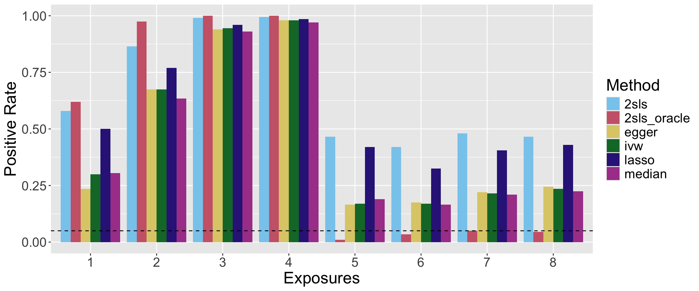
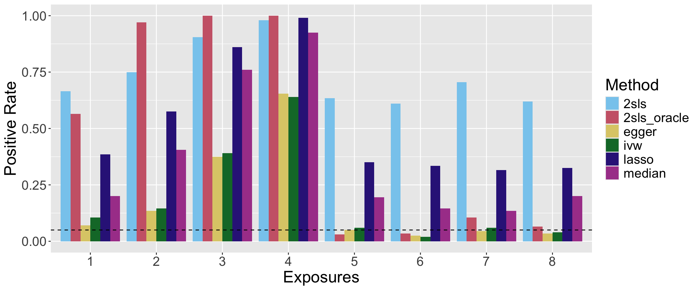
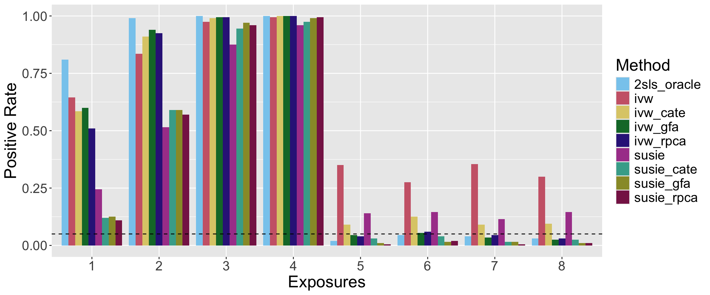
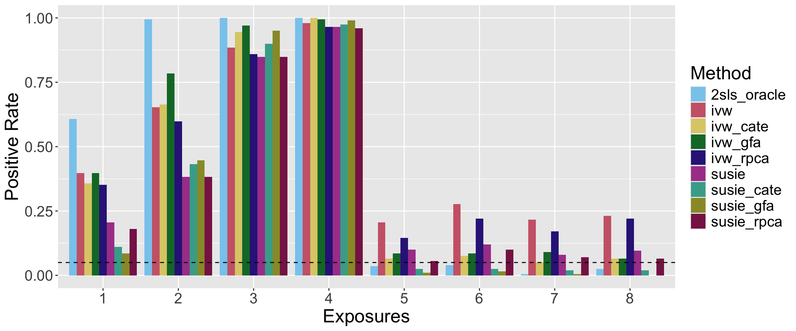
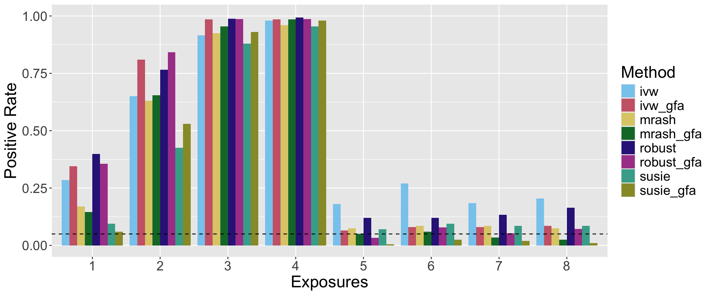
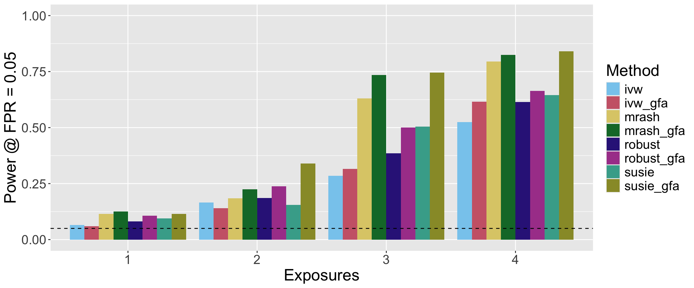
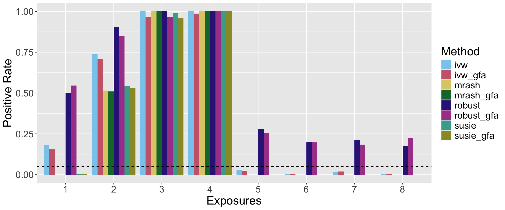
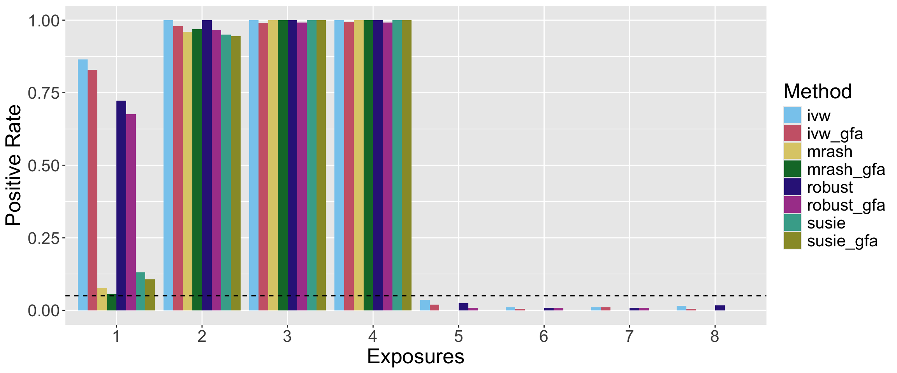
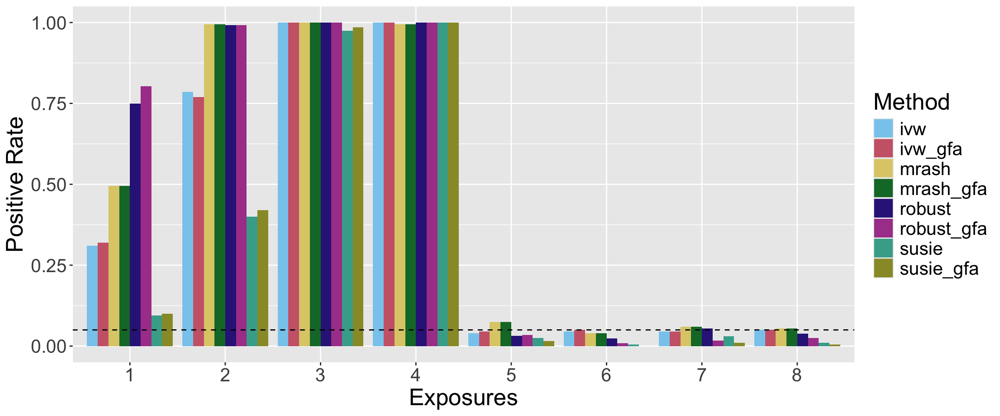
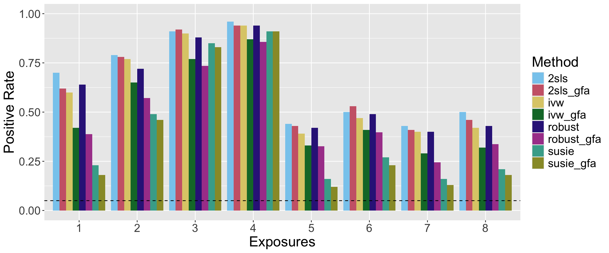

Simulations
Last updated: 2024-07-01
Checks: 6 1
Knit directory: mvmr_website/
This reproducible R Markdown analysis was created with workflowr (version 1.7.0). The Checks tab describes the reproducibility checks that were applied when the results were created. The Past versions tab lists the development history.
The R Markdown file has unstaged changes. To know which version of
the R Markdown file created these results, you’ll want to first commit
it to the Git repo. If you’re still working on the analysis, you can
ignore this warning. When you’re finished, you can run
wflow_publish to commit the R Markdown file and build the
HTML.
Great job! The global environment was empty. Objects defined in the global environment can affect the analysis in your R Markdown file in unknown ways. For reproduciblity it’s best to always run the code in an empty environment.
The command set.seed(20221205) was run prior to running
the code in the R Markdown file. Setting a seed ensures that any results
that rely on randomness, e.g. subsampling or permutations, are
reproducible.
Great job! Recording the operating system, R version, and package versions is critical for reproducibility.
Nice! There were no cached chunks for this analysis, so you can be confident that you successfully produced the results during this run.
Great job! Using relative paths to the files within your workflowr project makes it easier to run your code on other machines.
Great! You are using Git for version control. Tracking code development and connecting the code version to the results is critical for reproducibility.
The results in this page were generated with repository version 96b5c8a. See the Past versions tab to see a history of the changes made to the R Markdown and HTML files.
Note that you need to be careful to ensure that all relevant files for
the analysis have been committed to Git prior to generating the results
(you can use wflow_publish or
wflow_git_commit). workflowr only checks the R Markdown
file, but you know if there are other scripts or data files that it
depends on. Below is the status of the Git repository when the results
were generated:
Ignored files:
Ignored: .DS_Store
Ignored: backup/
Ignored: data/.DS_Store
Ignored: data/results/.DS_Store
Ignored: data/results_true_gx/uncor_plei_gy_0.2_zx_0.2_zy_0.2/
Untracked files:
Untracked: analysis/realdata.Rmd
Untracked: data/real_data_results_summary.tsv
Unstaged changes:
Modified: analysis/_site.yml
Modified: analysis/experimental.Rmd
Modified: analysis/index.Rmd
Modified: analysis/simulations.Rmd
Note that any generated files, e.g. HTML, png, CSS, etc., are not included in this status report because it is ok for generated content to have uncommitted changes.
These are the previous versions of the repository in which changes were
made to the R Markdown (analysis/simulations.Rmd) and HTML
(docs/simulations.html) files. If you’ve configured a
remote Git repository (see ?wflow_git_remote), click on the
hyperlinks in the table below to view the files as they were in that
past version.
| File | Version | Author | Date | Message |
|---|---|---|---|---|
| Rmd | 1d0517a | Nathan LaPierre | 2023-10-03 | added brms, susie.ss, and mrash.ss results; split into new analysis file, experimental.Rmd |
| html | 1d0517a | Nathan LaPierre | 2023-10-03 | added brms, susie.ss, and mrash.ss results; split into new analysis file, experimental.Rmd |
| Rmd | a1dd338 | Nathan LaPierre | 2023-09-05 | added true G-X sim and preliminary real data results |
| html | a1dd338 | Nathan LaPierre | 2023-09-05 | added true G-X sim and preliminary real data results |
| Rmd | 6c53a85 | Nathan LaPierre | 2023-08-07 | added high-exposure, uk biobank, and snp selection results to website |
| html | 6c53a85 | Nathan LaPierre | 2023-08-07 | added high-exposure, uk biobank, and snp selection results to website |
| Rmd | 08e3dae | Nathan LaPierre | 2023-06-20 | added mrash and ps sims |
| html | 08e3dae | Nathan LaPierre | 2023-06-20 | added mrash and ps sims |
| Rmd | f5f65b6 | Nathan LaPierre | 2023-05-30 | updated check for pip methods in plots |
| Rmd | e2a2fc4 | Nathan LaPierre | 2023-05-30 | added in GFA sims and removed old RPCA and "new parameter setting" sims |
| html | e2a2fc4 | Nathan LaPierre | 2023-05-30 | added in GFA sims and removed old RPCA and "new parameter setting" sims |
| Rmd | c9438a8 | Nathan LaPierre | 2023-04-12 | added rpca-cate augmented experiments |
| html | c9438a8 | Nathan LaPierre | 2023-04-12 | added rpca-cate augmented experiments |
| Rmd | 729493a | Nathan LaPierre | 2023-02-28 | added fixed highsnp sims and removed old ones |
| html | 729493a | Nathan LaPierre | 2023-02-28 | added fixed highsnp sims and removed old ones |
| Rmd | f8ef216 | Nathan LaPierre | 2023-02-22 | added cor only and uncor only plots to original sim part |
| html | f8ef216 | Nathan LaPierre | 2023-02-22 | added cor only and uncor only plots to original sim part |
| Rmd | 543a439 | Nathan LaPierre | 2023-02-21 | added susiecate plots |
| html | 543a439 | Nathan LaPierre | 2023-02-21 | added susiecate plots |
| Rmd | d4deb61 | Nathan LaPierre | 2023-02-09 | added preliminary 2sls-cate results in correlated-only case |
| html | d4deb61 | Nathan LaPierre | 2023-02-09 | added preliminary 2sls-cate results in correlated-only case |
| Rmd | f926bb8 | Nathan LaPierre | 2023-02-01 | added simulation plots showing power at given FPR threshold |
| html | f926bb8 | Nathan LaPierre | 2023-02-01 | added simulation plots showing power at given FPR threshold |
| Rmd | e8b7ae9 | Nathan LaPierre | 2023-02-01 | added 2SLS Enhanced results on original data |
| html | e8b7ae9 | Nathan LaPierre | 2023-02-01 | added 2SLS Enhanced results on original data |
| Rmd | f249398 | Nathan LaPierre | 2023-01-18 | added some info on gibbs results, updated sims page to get updated navbar |
| html | f249398 | Nathan LaPierre | 2023-01-18 | added some info on gibbs results, updated sims page to get updated navbar |
| Rmd | b890f04 | Nathan LaPierre | 2023-01-09 | rearranged website, added simulation and gibbs tabs, added more project description |
| html | b890f04 | Nathan LaPierre | 2023-01-09 | rearranged website, added simulation and gibbs tabs, added more project description |
Simulation description
We simulate according to the following DAG:
Here, G are the Genotypes, X are the exposure phenotypes, Y is the outcome phenotype, and Z are confounders. All except Y are expected to be multivariate. The edge variables signify effects between these variables. Let \(M\) be the number of SNPs, \(K\) be the number of exposures, and \(J\) be the number of confounders.
The structural equation model for this DAG is:
\[Z = G\theta_{GZ} + \epsilon_Z\] \[X = G\theta_{GX} + Z\theta_{ZX} + \epsilon_X\] \[Y = X\theta_{XY} + G\theta_{GY} + Z\theta_{ZY} + \epsilon_Y\]
G is assumed fixed or is drawn from standard normal distributions. Define
\[\psi_X = \theta_{GZ} * \theta_{ZX}\] \[\psi_Y = \theta_{GZ} * \theta_{ZY}\] Then \(\psi_X\) defines the heritability of X mediated through Z, \(\psi_Y\) defines the confounding effect from G to Y that is correlated with X, and \(\theta_{GY}\) defines the confounding effect from G to Y that is not correlated with X.
By default, \(\theta_{XY}\) are fixed effects specified by the user, which allows control over the strength of effects in the simulation. All other effects \(theta_i\) (where \(i\) is a stand-in for \(GX\), \(GY\), and so on) are drawn according to point-(multivarite-)normal distributions,
\[\theta_i = f_i * \gamma^*_{i},\]
where f is the point-(multivariate-)normal,
\[f_i \sim \pi_{0,i}\delta + \pi_{1,i}\mathcal{N}_d(\mu, \Sigma_{i}),\]
where \(\delta\) is the Dirac delta function and \(d\) is the dimensionality of the effected variable, i.e. \(J\) if the effect is on \(Z\), \(K\) for \(X\), or \(1\) for \(Y\). \(\mu\), the mean parameter, is set to 0 by default, but can be set to non-zero values to allow “directional pleiotropy”. \(\Sigma_i\) is currently taken to be a diagonal matrix, but could be generalized to allow correlated effects.
\(\pi_{0,i}\) represents the amount of sparsity while \(\pi_{1,i}\) represents the density, and \(\pi_{0,i} + \pi_{1,i} = 1\). In practice this is achieved by first simulating the multivariate normal, then multiplying each entry by \(\pi_{1,i}\), which is drawn separately for each entry according to
\[\pi_{1,i} \sim Bernoulli(\phi_i),\]
where \(\phi_i\) is a parameter that controls the level of density. By default, the density of \(\theta_{ZY}\) is set to 1 (\(\phi_{ZY}=1\)) because if some \(Z_j\) does not affect \(Y\) then it is not a confounder.
Finally, \(\gamma_i\) represents the scaling parameter to achieve the desired \(R^2\). \(G\), \(Z\), \(X\), and \(Y\) are controlled to have unit variance (see simulation of noise below). For \(G\) to have the desired \(R^2\) (heritability) on \(Z\), \(X\), or \(Y\), we need to adjust this parameter by the number of SNPs and the sparsity of the effects. Therefore, the per-SNP \(\gamma_i^*\) is
\[\gamma^*_{i} = \sqrt{\gamma_{i} / M / \phi_i}\]
The noise variances, epsilon, are designed so that Z, X, and Y have unit variance. So they are simulated according to
\[\epsilon_Z \sim \mathcal{N}_J(0, \xi_Z I_J)\] \[\epsilon_X \sim \mathcal{N}_K(0, \xi_Z I_K)\] \[\epsilon_Y \sim \mathcal{N}(0, \xi_Y)\]
where
\[\xi_Z = 1 - \gamma_{GZ}\] \[\xi_X = 1 - \gamma_{GX} - \gamma_{ZX}\] \[\xi_y = 1 - \gamma_{GY} - \gamma_{ZY} - \sum_i \theta_{XY,i}^2\]
Baseline Methods Assessed
- “2SLS”: vanilla two-stage least squares implemented by me. I first perform multiple regression of each \(X_j\) on \(G\), obtaining an estimate \(\hat{\tilde{X}}\) of the genetic component of X, \(\tilde{X}\). I then regress \(Y\) on \(\hat{\tilde{X}}\) (second-stage regression).
\[X_1,...,X_K \sim G \rightarrow \hat{\tilde{X}}\] \[Y \sim \hat{\tilde{X}} \rightarrow \hat{\theta}_{XY}, pvalue\]
- “2SLS Oracle”: This is an augmented version of 2SLS where, in the second-stage regression, I include the true values of \(G\theta_{GZ}\) (which is equal to the genetic component of Z, \(\tilde{Z}\)) and \(G\theta_{GY}\) as covariates. This represents the ideal performance of 2SLS if the true confounders were known (“oracle” setting), though it may be beatable by putting appropriate sparse priors on the confounders.
\[X_1,...,X_K \sim G \rightarrow \hat{\tilde{X}}\] \[Y \sim \hat{\tilde{X}} + \tilde{Z} + G\theta_{GY} \rightarrow \hat{\theta}_{XY}, pvalue\]
- “2SLS Enhanced”: This is an augmented version of 2SLS where, in the second stage regression, I include estimates of \(G\theta_{GZ}\) and \(G\theta_{GY}\) that can be obtained without knowing the true values. The former is estimated by running SVD on \(\hat{\theta}_{GX}\). The latter is estimated by regressing \(X\) out of \(Y\) and then regressing those residuals on \(G\).
\[X_1,...,X_K \sim G \rightarrow \hat{\tilde{X}}\]
\[SVD(\hat{\theta}_{GX}) \rightarrow \widehat{\theta_{GZ}\theta_{ZX}} = \hat{\psi}_X\] \[Y \sim X \rightarrow \hat{Y}_{resid}\] \[\hat{Y}_{resid} \sim G \rightarrow \hat{\theta}_{GY}\] \[Y \sim \hat{\tilde{X}} + G\hat{\psi}_x + G\hat{\theta}_{GY} \rightarrow \hat{\theta}_{XY}, pvalue\]
- SuSiE-SVD: This performs the same first-stage regression as 2SLS, then runs runs the SuSiE R package for the second-stage regression. Along with \(\hat{\tilde{X}}\), we include the SNPs \(G\) to attempt to control for uncorrelated pleiotropy as well as an estimate of the confounders \(\hat{\tilde{Z}}\), produced by running truncated singular value decomposition (SVD) on \(\hat{\tilde{X}}\), to attempt to control for correlated pleiotropy. We give a slightly incorrect value for the true number of confounders to SVD.
\[X_1,...,X_K \sim G \rightarrow \hat{\tilde{X}}\] \[SVD(\hat{\tilde{X}}) \rightarrow \hat{\tilde{Z}} = G\hat{\theta}_{GZ}\]
\[susieR::susie(Y \sim \hat{\tilde{X}} + G + \hat{\tilde{Z}}) \rightarrow \hat{\theta}_{XY}, pvalue\]
- Multivariate versions of four standard MR methods, implemented in the MendelianRandomization package: IVW, Egger, Median, and Lasso. For each of these, I first regress each \(X_j\) and \(Y\) on each genetic variant. The betas and standard errors from these per-variant regressions (mimicking summary statistics) are given to the methods as input.
\[X_i \sim G_j \rightarrow \hat{\beta}_{ij}, \hat{s}^2_{ij} \qquad Y \sim G_j \rightarrow \hat{\beta}_{yj}, \hat{s}^2_{yj}\] \[MendelianRandomization::MVMR\_IVW(\hat{\beta}, \hat{s}^2) \rightarrow \hat{\theta}_{XY}, pvalue\]
Simulation Results
Here are some plots showing our simulation results. First, I’ll briefly explain the parameter settings.
The following parameters are fixed:
- N = 20000 samples / individuals
- M = 100 SNPs
- K = 30 exposures / risk factors
- First four exposures are true effects with \(\theta_{XY}\) = 0.05 / 0.1 / 0.2 / 0.3. This means that the variance explained of the outcome is 0.0025, 0.01, 0.04, 0.09. The other 26 effects are null. I show the first four nulls in the bar plots below for illustrative purposes.
- J = 3 correlated confounding variables “Z”
- 50% sparsity, i.e. of genotype effects on X/Y/Z are set to zero. The rest are drawn from normal distributions. In other words, the effects are point-normal. See “About” for details.
There are five key parameters I vary in these simulations:
- \(\gamma_{GZ}\)/\(\gamma_{GY}\)/\(\gamma_{GZ}\) = variance of X/Y/Z explained by G;
- \(\psi_{X}\)/\(\psi_{Y}\) = percent of X/Y explained by G through confounder Z;
- \(\mu\) = mean parameter of multivariate normal effect size draws
The default settings of these are 0.1 (10%) for \(\gamma_{GZ}\)/\(\gamma_{GY}\)/\(\psi_{X}\)/\(\psi_{Y}\) and 0 for \(\mu\). The default setting for \(\gamma_{GZ}\) is 0.6, which is high, but this is to allow a wide range of \(\psi_{X}\) and \(\psi_{Y}\) values, since \(\psi_{X}\) and \(\psi_{Y}\) cannot be greater than \(\gamma_{GZ}\).
I show two types of plots:
- Bar plots, showing results for a single parameter setting, with Positive Rate (FPR/Power) on the y-axis and the index of the exposure on the x-axis. The first four exposures are true positives (so y-axis is empirical power) while the rest are null (so y-axis is FPR); only the first four nulls are shown for brevity.
- Line plots, showing results as one of the parameters is varied. FPR plots show results averaged over the four true effects while Power plots show results averaged over the null effects. FPR/Power is on the y-axis and the parameter value is on the x-axis.
Here are the results with the default settings. We see that all methods except 2SLS-Oracle are inflated, with 2SLS-Oracle being the most powerful. Apart from 2SLS-Oracle, there is a clear order among the other methods in terms of both FPR and Power, with 2SLS > MVMR Lasso > MVMR Median > MVMR IVW/Egger.
As a sanity check, the plot below shows results in simulations with no confounding. As expected, all methods perform well.
Here’s the performance with only correlated pleiotropy. Here we see that all methods except the oracle method have inflated FPR:

Finally, here’s the performance with only uncorrelated pleiotropy.

Simulations with new settings + Cate, RPCA, & GFA plugins
I performed some more simulations under settings that may be more realistic. The following changes were made as compared with the above simulations:
- The number of SNPs was increased from 100 to 300
- The density parameters were decreased from \(\phi_X=\phi_Y=\phi_Z=50\%\) to \(\phi_X=10\%, \phi_Y=\phi_Z=10\%\); thus a much smaller percentage of variants will affect the phenotypes, especially for pleiotropic effects.
- The defaults for \(\theta_{GX}\) and \(\theta_{GY}\) were increased from \(0.1\) to \(0.2\). Meanwhile the default for \(\theta_{GZ}\) was decreased to \(0.4\) and \(\psi_Y\) was kept at \(0.15\). This was done to obtain more balanced and realistic heritabilities, something like we might expect if \(X\) were lipid measurements and \(Y\) was some complex trait. The resulting heritabilities are \(h^2(X)=30\%\), \(h^2(Z)=40\%\), \(h^2(Y)=49.25\%\).
- I didn’t bother fiddling with \(\theta_{GX}\) or \(\mu\) here as the effects should be similar.
- I now include more methods in the plots.
Here I’m comparing standard methods augmented with either Cate or RPCA, under several sparsity and SNP count settings. (Update: I have now added GFA as well, which also works on summary statistics.) This will show that Cate is more robust than RPCA in that it does not assume that the G–>Z effects are dense, while RPCA needs this assumption. Of course, the benefit of RPCA is we can apply it to summary statistics, while Cate needs individual-level data.
We will also see that Robust generally enjoys greater power than SuSiE, but is occasionally inflated, particularly in a scenario with denser direct effects and fewer SNPs overall. On the other hand, SuSiE has low power to detect weak effects but is very robust to almost any setting, provided that it is given a reasonable estimate of correlated pleiotropic effects via Cate or RPCA.
Here are the results with correlated pleiotropy only, with \(\theta_{gx}\) sparse and \(\theta_{gz}\) dense (\(\phi_{gx}=0.1\) and \(\phi_{gz}=0.8\)).

Here’s the same plot, except with \(\phi_{gz}=0.1\). This is a problem for RPCA, but not Cate.
Finally, here’s a setting with \(100\) SNPs (the above two have 300) and \(\phi_{gx}=0.5\) and \(\phi_{gy}=0.4\).

Here’s the same, but with both kinds of pleiotropy:
Finally, here’s the power at a fixed FPR threshold, using the same data as above:
| Version | Author | Date |
|---|---|---|
| e2a2fc4 | Nathan LaPierre | 2023-05-30 |
MR.Ash assessments
Last four plots above, but now comparing MR.Ash to other second-stage methods.
Correlated pleiotropy, \(\phi_{gy}=0.1\).
Correlated pleiotropy, with \(100\) SNPs (the above has 300) and \(\phi_{gx}=0.5\) and \(\phi_{gy}=0.4\).

Here’s the same, but with both kinds of pleiotropy:
Finally, here’s the power at a fixed FPR threshold, using the same data as above:

| Version | Author | Date |
|---|---|---|
| 08e3dae | Nathan LaPierre | 2023-06-20 |
Simulations with many exposures
We have talked about potentially supporting hundreds of exposures, but thus far our simulations have only had 30. Here I raise that to 200. First, we keep the other settings the same as above, with 300 SNPs. Notably, there’s still only four true causal exposures, so very sparse, and also only three confounders. Here’s what it looks like with no pleiotropy:

Right off the bat we notice something odd: robust is inflated despite no pleiotropy. Everything else looks normal right now.
If we instead increase the number of SNPs to 1000, that goes away:

Now here’s correlated-only pleiotropy:
Now we see another odd thing – methods are not inflated even when they have no first-stage factor analysis to infer confounders.
Finally, here’s both kinds of pleiotropy:

As usual, IVW and Robust drop in power, so methods like MR.Ash and Susie perform relatively better here.
I ran some additional experiments (not shown here) which showed that the lack of inflation under pleiotropy was due to a low number of confounders relative to the number of exposures.
So the interesting result is that two ratios are important:
- The “M/K” or “num SNPs / num exposures” ratio – if <1 than traditional methods don’t work at all, and robust becomes inflated if it’s close to 1.
- The “J/K” or “num confounders / num exposures” ratio – if very low (e.g. 1/100) then confounding will not inflate methods, even if Zs affect many Xs. It is possible this can be overrided with very powerful confounding effects.
Simulations using UK Biobank Genotypes
Here are some simulations using real genotypes from White European samples in the UK Biobank. Phenotype simulations is still the same as above – we just use real genotypes instead of simulating them. We randomly downsample samples, SNPs, and loci from the mvSusie blood cell trait data, which contains 975 loci averaging ~10k SNPs each and ~250k samples. We usually use 100 loci, 1000 SNPs per locus, and 10-20k samples.
In addition to using real genoytpes, we make these simulations more realistic in another important dimension: SNP selection. Instead of providing the true causal SNPs to the methods as in the above simulations, we perform SNP selection with mvSusie, using the genotypes and simulated phenotypes as input.
Here are the settings used for these simlations:
- 10,000 samples
- 100 loci, each with 1-5 causal SNPs implanted (so ~300 overall)
- 30 exposures, 3 confounders
- \(\theta_{gx}=0.2\), \(\theta_{gz}=0.4\), \(\theta_{zx}=0.5\), \(\theta_{zy}=0.375\)
- \(\phi_{gx}=0.05\), \(\phi_{gy}=0.05\), \(\phi_{gz}=0.05\), \(\phi_{zx}=0.5\)
- As usual, first four exposures are true effects with effect sizes \(0.05,0.1,0.2,0.3\)
Here are the results with correlated pleiotropy:

And here are the results with both kinds of pleiotropy:
SNP Selection Comparison
How should we select SNPs to use as instruments? The traditional strategy is to pick the SNP with the lowest p-value in each locus. But this becomes tricky in the multi-exposure case. What if a locus has different causal variants for different traits?
To test this, I compared several SNP selection strategies in the UK Biobank simulations:
- mvSusie, i.e. the same strategy as above
- mvSusie-RSS, the summary statistics mode of mvSusie
- max: select the SNP at each locus that has the best z-score for any trait
- mean: select the SNP at each locus that has the best z-score, averaged across all traits
The latter three methods use summary statistics, which would normally take an intractable amount of time to generate. So instead I simulated the statistics from the RSS model,
\[\hat{\beta} \sim \mathcal{N}(SRS\beta^{-1},SRS)\]
where the true \(\beta\) are the effects simulated by my phenotype simulator, the \(R\) is taken from the LD file included with each mvSusie locus, and \(S\) is a matrix containing SNP standard deviations (see RSS paper). The standard errors for the summary statistics were simply set to \(1/\sqrt{N}\).
We can show that using mvSusie or mvSusie-RSS leads to a better F1 score for SNP selection, as well as improved downstream performance.
First, here is the precision / recall / F1 for each method (no pleiotropy):
- mvSusie: 0.34358 / 0.47136 / 0.39688
- mvSusie-RSS: 0.47689 / 0.48672 / 0.47989
- max: 0.63289 / 0.2106 / 0.31591
- mean: 0.42589 / 0.14216 / 0.21308
Results look similar regardless of the level of pleiotropy. There is a clear hierarchy, mvSusie-RSS > mvSusie > max > mean, in terms of F1. The high precision but low recall of max/mean reflects that they can’t capture all causal SNPs at each locus. It’s a bit less clear why mvSusie-RSS > mvSusie, but it’s probably because I simulated the sumstats exactly from the RSS model.
The next question, naturally, is whether this actually impacts downstream results of the methods. The answer is yes, and here’s a graph showing it for IVW and Susie (no pleiotropy):
Sims with true genotypes and exposures, only simulating outcome
In these simulations, we use true UK Biobank genotypes, as above, but here we also use true exposure phenotype values. We only simulate the outcome trait. Simulating the confounders is optional, but here I used real confounders too. This makes the simulation as “realistic” as possible, with the downside being that we don’t know which SNPs truly affect the exposures & can’t control those effects.
Here I used loci for 16 UK Biobank blood cell traits preprocessed for the mvSusie paper. I downsampled to 50,000 samples and 200 loci for simplicity. Out of the 16 traits, I picked two randomly to serve as unobserved confounders.
Here are the results with no pleiotropy. Methods are calibrated, as expected.
Now here are the results with correlated pleiotropy, with \(\gamma_{zx} = \gamma_{zy} = 0.2\). Remember, I don’t have control over \(\gamma_{gz}\), since here \(Z\) are real traits. Here we see a great deal of confounding, even with GFA:

So we are getting results that seem plausible, but the confounding seems quite strong. I ran more sims with \(\gamma_{zx} = \gamma_{zy} = 0.1\) (not shown), which slightly reduced confounding, but methods were still inflated even with GFA. Still need to figure out what’s going on here.
Real data results
I ran 2SLS/IVW/Robust/Susie/MR.Ash + nothing/GFA/RPCA on the loci for 16 UK Biobank blood cell traits preprocessed for the mvSusie paper. I chose Hemoglobin as the outcome and the other 15 as exposures, arbitrarily. I have no idea if this is reasonable, so take the second-stage results with a grain of salt. I’ll update with more realistic traits and better formatting later.
Here are the number of significant traits found by each method:
- 2SLS: 10
- 2SLS-GFA: 10
- 2SLS-RPCA: 9
- IVW: 10
- IVW-GFA: 7
- IVW-RPCA: 8
- Robust: 7
- Robust-GFA: 6
- Robust-RPCA: 8
- Susie: 3
- Susie-GFA: 4
- Susie-RPCA: 4
- MR.Ash: 6
- MR.Ash-GFA: 6
- MR.Ash-RPCA: 6
So we can see that sometimes first-stage methods reduce the number of significant trait pairs. The methods vary on the number of exposures found significant, though they generally agree on the order.
Here are the number of factors found by each FA method, and their correlations with the 15 exposure traits (sorry for ugly raw format):
- GFA: 4 factors (after pruning heuristic)
[1] "Number of factors detected by GFA: 4"
[1] "Correlations with x_betas:"
WBC_count RBC_count MCV RDW Platelet_count
[1,] -0.001640976 -0.75468968 0.98605224 -0.31663391 0.03624346
[2,] 0.325981371 -0.09764243 0.05087593 -0.05687534 0.93476251
[3,] 0.023064779 -0.07617768 0.12559695 -0.15648708 0.01058407
[4,] -0.321576727 -0.02835313 0.05563161 -0.00118629 0.03691328
Plateletcrit PDW Lymphocyte_perc Monocyte_perc Neutrophill_perc
[1,] 0.04016506 -0.06180007 0.06647548 0.05594493 -0.06597634
[2,] 0.90809002 -0.55897034 0.01045073 0.01053307 -0.03457303
[3,] 0.02770390 0.10704047 -0.06414842 -0.03178419 0.07043654
[4,] 0.00682206 -0.05983110 0.96675776 0.27570438 -0.97842300
Eosinophill_perc Basophill_perc Reticulocyte_perc MSCV HLR_perc
[1,] -0.06279681 0.02657169 0.102809344 0.88625102 0.170774450
[2,] 0.09842009 0.05558868 -0.008599868 0.03262786 0.007867302
[3,] -0.01165736 -0.00792867 0.987386457 -0.14451179 0.987802241
[4,] 0.20059308 0.11994296 -0.082500786 0.12663053 -0.061190626- RPCA: 13 factors (no pruning)
[1] "Number of factors detected by RPCA: 13"
[1] "Correlations with x_betas:"
WBC_count RBC_count MCV RDW Platelet_count
[1,] -0.102095006 0.462869586 -0.479733770 0.024229052 -0.372475422
[2,] 0.419429298 0.284659704 -0.396475049 0.104518434 0.606220257
[3,] -0.295600205 0.368873285 -0.420897576 0.171037432 -0.087991929
[4,] 0.079700065 -0.049654160 0.070989330 0.089435198 -0.121957750
[5,] -0.013486931 0.072250670 0.035881308 0.053908895 -0.059051433
[6,] -0.408498335 -0.238159343 0.007617194 -0.380541389 0.103350258
[7,] -0.232778402 -0.173081414 -0.056831128 0.308649364 -0.035678286
[8,] 0.090406415 -0.126642244 0.042541912 -0.083316360 -0.001085696
[9,] -0.059653731 -0.011806263 -0.052414418 0.270085345 -0.023874378
[10,] 0.014354183 -0.002924474 0.020023040 0.008973424 0.018205410
[11,] 0.010207131 -0.017109076 0.037672692 -0.010542113 0.013850411
[12,] -0.019022972 0.004579979 0.005743584 0.007400343 0.003209279
[13,] 0.004254445 0.008882500 0.010584905 -0.010955323 0.010688070
Plateletcrit PDW Lymphocyte_perc Monocyte_perc Neutrophill_perc
[1,] -0.352704986 0.364713774 -0.361376169 -0.191987718 0.403521073
[2,] 0.641283437 -0.285581415 -0.249106479 -0.060101095 0.224404739
[3,] -0.147663273 -0.017198872 0.433218044 0.194557047 -0.493851833
[4,] -0.135894160 -0.023659701 -0.444764748 -0.160943509 0.474331214
[5,] 0.010917763 0.049580935 -0.269549980 0.442772389 0.001697879
[6,] -0.032898149 -0.179395399 -0.056383699 0.029950428 0.042152127
[7,] 0.093138535 0.206575311 -0.030301279 0.032833525 0.042485129
[8,] 0.091555474 0.169117602 -0.036891945 -0.185170321 -0.007131183
[9,] -0.074433455 -0.156936780 -0.018031752 -0.116356819 0.017082797
[10,] 0.015548812 -0.032775914 -0.003521535 -0.050230055 0.017867336
[11,] 0.004391547 -0.013130119 -0.008541238 0.037531366 -0.002805021
[12,] -0.007191359 0.009035615 -0.001589169 -0.006344848 0.004468541
[13,] 0.016166542 0.014291370 -0.005441077 -0.010111899 0.012487903
Eosinophill_perc Basophill_perc Reticulocyte_perc MSCV
[1,] -0.088915000 -0.117998027 0.2474364500 -0.601589489
[2,] 0.059826493 0.012290744 -0.0962091162 -0.327354648
[3,] 0.220223819 0.116363603 -0.4617865613 -0.226336510
[4,] -0.157427805 -0.069499723 -0.4847973241 0.187549039
[5,] 0.335569245 0.168349777 0.0611062173 0.062306447
[6,] -0.016342239 -0.019982891 0.0658507416 -0.142766188
[7,] -0.154073560 0.193978437 0.0126234349 0.016055167
[8,] 0.423262465 0.301601724 -0.0054947977 -0.005286929
[9,] 0.210416415 -0.253647386 0.0003153864 0.003298467
[10,] 0.009229434 0.002925570 0.0661240105 0.001889833
[11,] -0.001062457 -0.041301685 0.0623734135 0.001506438
[12,] -0.005449317 -0.007815489 0.0123083211 0.002891452
[13,] -0.013552033 -0.046556558 0.0173652680 -0.014306854
HLR_perc
[1,] 0.17455981
[2,] -0.10057817
[3,] -0.47560346
[4,] -0.48563753
[5,] 0.06599330
[6,] 0.02873132
[7,] 0.02948258
[8,] -0.01456019
[9,] 0.02461489
[10,] 0.06070806
[11,] 0.05783540
[12,] 0.01099033
[13,] 0.00724240Population stratification assessments
Simulated population structure using Balding-Nichols model on two populations. \(F_{ST}=0.1\), \(\gamma_{psx}=0.25\), \(\gamma_{psy}=0.25\), \(\gamma_{psz}=0.25\).
No pleiotropy (just population stratification):
Both types of pleiotropy:
Here’s the power at a fixed FPR threshold, with no pleiotropy:
| Version | Author | Date |
|---|---|---|
| 08e3dae | Nathan LaPierre | 2023-06-20 |
No pleiotropy (just population stratification), tougher setting:
sessionInfo()R version 4.2.1 (2022-06-23)
Platform: x86_64-apple-darwin17.0 (64-bit)
Running under: macOS Big Sur ... 10.16
Matrix products: default
BLAS: /Library/Frameworks/R.framework/Versions/4.2/Resources/lib/libRblas.0.dylib
LAPACK: /Library/Frameworks/R.framework/Versions/4.2/Resources/lib/libRlapack.dylib
locale:
[1] en_US.UTF-8/en_US.UTF-8/en_US.UTF-8/C/en_US.UTF-8/en_US.UTF-8
attached base packages:
[1] stats graphics grDevices utils datasets methods base
other attached packages:
[1] ggpubr_0.6.0 ggplot2_3.5.0 DiagrammeR_1.0.10 workflowr_1.7.0
loaded via a namespace (and not attached):
[1] tidyselect_1.2.0 xfun_0.39 bslib_0.5.0 purrr_1.0.1
[5] carData_3.0-5 colorspace_2.1-0 vctrs_0.6.5 generics_0.1.3
[9] htmltools_0.5.5 yaml_2.3.7 utf8_1.2.4 rlang_1.1.3
[13] jquerylib_0.1.4 later_1.3.1 pillar_1.9.0 glue_1.7.0
[17] withr_3.0.0 RColorBrewer_1.1-3 lifecycle_1.0.4 stringr_1.5.0
[21] ggsignif_0.6.4 munsell_0.5.1 gtable_0.3.4 visNetwork_2.1.2
[25] htmlwidgets_1.6.2 evaluate_0.21 labeling_0.4.3 knitr_1.43
[29] callr_3.7.3 fastmap_1.1.1 httpuv_1.6.11 ps_1.7.5
[33] fansi_1.0.6 highr_0.10 broom_1.0.5 Rcpp_1.0.12
[37] backports_1.4.1 promises_1.2.0.1 scales_1.3.0 cachem_1.0.8
[41] jsonlite_1.8.7 abind_1.4-5 farver_2.1.1 fs_1.6.3
[45] digest_0.6.33 stringi_1.8.3 rstatix_0.7.2 processx_3.8.2
[49] dplyr_1.1.2 getPass_0.2-2 rprojroot_2.0.3 grid_4.2.1
[53] cli_3.6.2 tools_4.2.1 magrittr_2.0.3 sass_0.4.7
[57] tibble_3.2.1 car_3.1-2 tidyr_1.3.0 whisker_0.4.1
[61] pkgconfig_2.0.3 ellipsis_0.3.2 rmarkdown_2.23 httr_1.4.6
[65] rstudioapi_0.15.0 R6_2.5.1 git2r_0.32.0 compiler_4.2.1